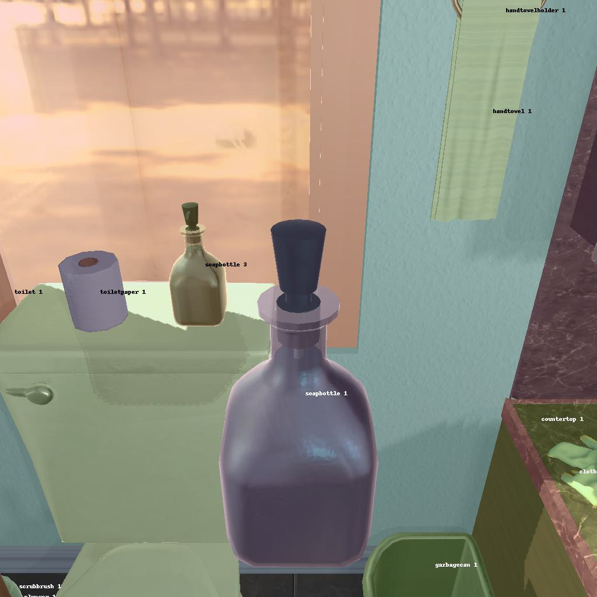
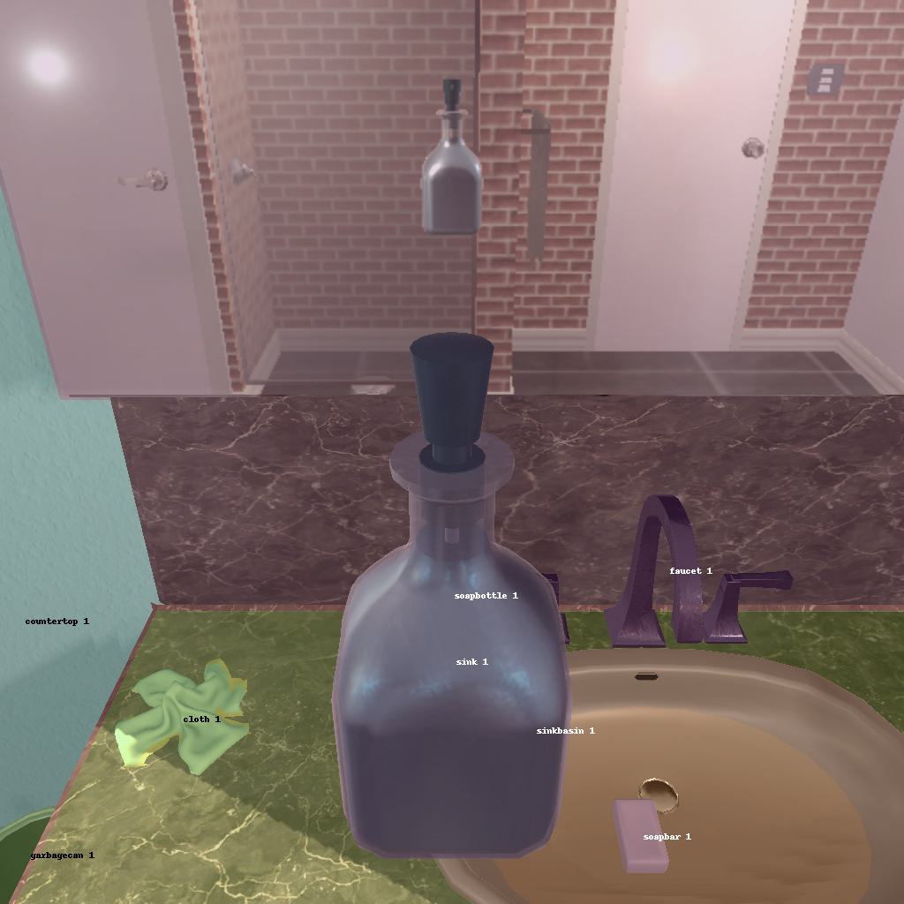

---------------------------------------------------------task: 27---------------------------------------------------------
--------------------------------------------------------------------------------------------------------------------------------------------------------------------
--------------------------------------------------------------------------------------------------------------------------------------------------------------------
Step:--------------------------------------------------------------------------12-------------------------------------------------------------------------------
----------------------------------------
VLM Prompt:
Image1:
Image2:
Image3:
**Instruction**
1. Analyze the provided image to identify all visible household objects, focusing on those relevant to the task description "find two soapbottle and put them in garbagecan."
2. Use the analysis of the image and the task hint "The agent must find an object of the desired type, pick it up, find the correct location to place it, put it down there, then look for another object of the desired type, pick it up, return to previous location, and put it down there with the other object." to answer the question: what is the most reasonable action in the choices for the task description "find two soapbottle and put them in garbagecan"?
4. Decide and write the answer using the template: The answer is: (i): , where i is the real number. If there is no desired object in the image, search every place based on **Initial Observation** to find the object. And if no one is exactly correct, choose a similar answer.
**Initial Observation**
You are in the middle of a room. Looking quickly around you, you can see countertop (1), sinkbasin (1-2), sink (1-2), garbagecan (1), drawer (1-2), toilet (1), handtowelholder (1)
**Answer Choices**
(1): go to countertop 1
(2): go to sinkbasin 1
(3): go to drawer 1
(4): go to drawer 2
(5): go to sink 2
(6): go to sinkbasin 2
(7): go to toilet 1
(8): go to handtowelholder 1
(9): put soapbottle 1 in/on sink 1
(10): clean soapbottle 1 with sinkbasin 1
(11): clean soapbottle 1 with sink 1
(12): clean soapbottle 1 with sink 2
(13): clean soapbottle 1 with sinkbasin 2
(14): examine soapbottle 1
(15): examine sink 1
**Answer**
Let's think step by step by following the instructions.
----------------------------------------
----------------------------------------
Original Response:
The task is to find two soapbottle and put them in garbagecan. From the initial observation, we can see there is a garbagecan mentioned in the room, so we know where to put the soapbottles once we find them.
In the provided images, we can see two soapbottles. In Image 1, soapbottle 1 is on the countertop, and in Image 2 and Image 3, soapbottle 1 is near sink 1. There is no other soapbottle visible in the images. Since we need to find two soapbottles, we must search other places based on the initial observation.
None of the answer choices involve searching for another soapbottle, but we can start by going to the soapbottle that we can see. The most reasonable action would be to go to the visible soapbottle, pick it up, and then continue searching for the second one.
The answer is: (1): go to countertop 1.
----------------------------------------
----------------------------------------
>>> Refine Original VLM Response and Get Pure Action: go to countertop 1
----------------------------------------
-----------------------------------------------------------------
Running time: 15.422862529754639 seconds
Total Money: 17.64094
-----------------------------------------------------------------
-----------------------------------------------------------------
Text Observation:You arrive at loc 0. On the countertop 1, you see a faucet 1, a cloth 1, and a soapbar 1.
-----------------------------------------------------------------
UNSUCCEED